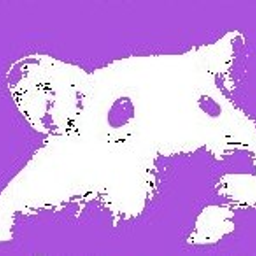

Смотрите видео вместе, будто вы рядом
Экран не транслируется
Нажмите «Поделиться экраном», чтобы начать
TV Hamsters v1.7.2
TV Hamsters — смотрите фильмы, сериалы и видео вместе, будто вы рядом. Один включает трансляцию экрана со звуком, остальные видят видео и слышат голоса всех участников. Можно обсуждать происходящее в реальном времени, хохотать и комментировать — как в настоящем кинотеатре, только онлайн.
Рация (Push-to-Talk) — нажми правой кнопкой мыши по микрофону, чтобы включить режим рации. Зажми Пробел или кнопку — говори. Отпусти — микрофон выключится. В обычном режиме микрофон работает постоянно.
Видео и голос передаются напрямую между хомячками — быстро и без задержек. Для соединения используется облачный сервер, он помогает найти друг друга и настроить связь. В одной комнате может быть до 5 участников.
Создать ярлык TV Hamsters на рабочем столе для быстрого запуска?